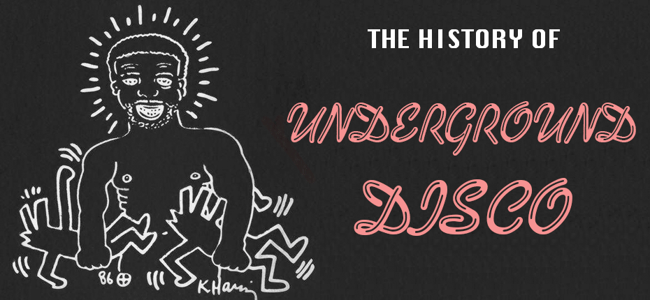
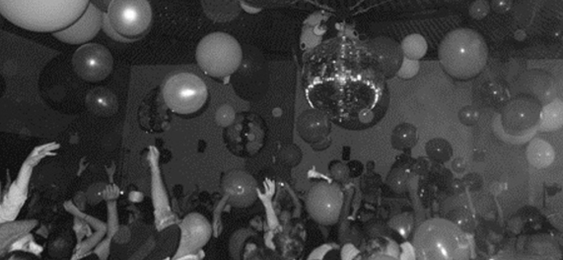
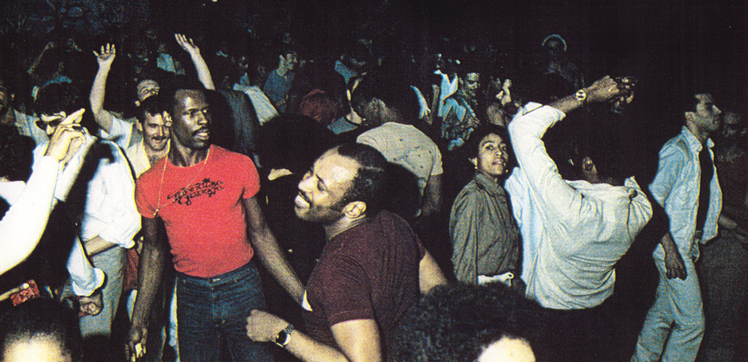
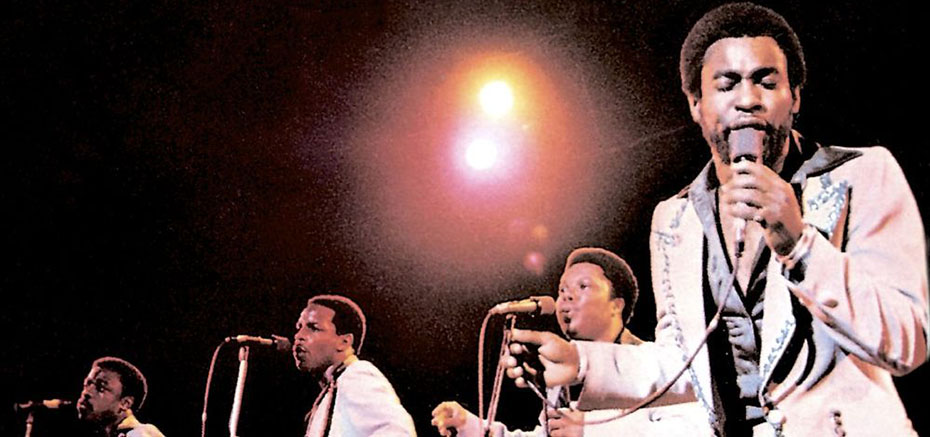
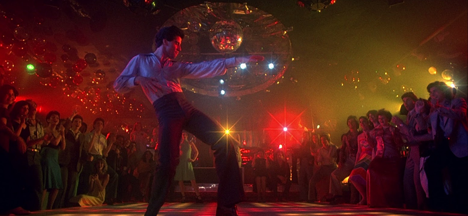
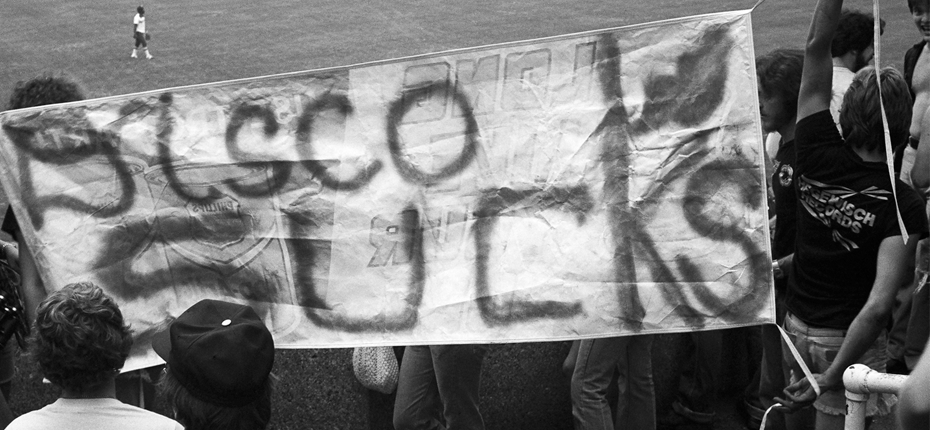
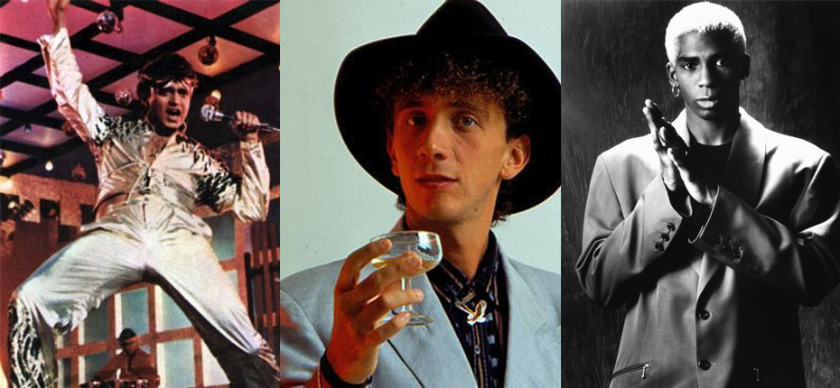

-

-

The Disco Revolution
Disco was a lot more than just a style of music.
For marginalized populations in the early seventies, namely people of color and gays, the disco lifestyle was an empowering outlet for sexual and personal freedoms. While white youths were experiencing free love and hippy sensibilites in the sixties, minorities in America were still fighting for basic civil rights.
Dance music and the club culture of the early discos allowed the oppressed to forget their problems and indulge in the same freedoms that white youths were already entitled to for over a decade.
Early disco music became extremeley popular WITHOUT the help of commercial radio airplay.
-

The Loft
Unlike most clubs, the Loft was a non-commercial dance venue that served no alcohol. Opened on Valentine's Day 1970 by DJ David Manusco, it quickly became the epicenter of disco nightlife in New York City.
Although beatmatching music together was the norm by most DJs at the time, Manusco was notorious for playing tracks the entire way through. He had an extreme admiration for disco music and wanted to enjoy the songs in their entirety. Partygoers enjoyed hearing their favorite sogns on Manusco's soundsytem, regarded as one of the best in it's time.
-

Paradise Garage and Larry Levan
Paradise Garage followed in the footsteps of the Loft: it didn't serve alcohol or food and operated on a membership-only basis to avoid police raids.
The club was specifically designed for the on-the-rise DJ, Larry Levan. He became a fixture at the club and was known for his legendary "Saturday Night Mass" DJ sets. He consistently surprised people during his night-long DJ sets and kept people dancing for hours.
-

Birth of the Disco Single
Before disco, vinyl records were exclusively pressed for purchase in either the LP or 7-inch single format. But with the rise of DJs like Larry Levan, 12-inch single songs began to be pressed.
In 1976, a small NYC record label called Salsoul decided to hold a contest for the best remix of the song, Ten Percent by Double Exposure. DJ Walter Gibbons created a daunting nine-minute rendition of the oringally three-minute long track that stole the show and won the contest.
At this point, Salsoul, as well as other record labels across the country, realized the financial benefits of pressing commercially-available remixes.
-

Disco Goes Mainstream
In the late 70's, companies began noticing the commercial viability of disco music. Mega disco clubs like Studio 54 attracted celebrities and the glitterati. The movie Saturday Night Fever truly pushed dance club culture into the mainstream and grossed over $200 million at the box office.
Even though Saturday Night Fever depcited a very gentrified picture of disco, it's popularity helped with the acceptance and normalization of black and gay culture originally entrenched in disco. Gay performers like the Village People and Sylvester were able to gain commercial success in America after disco's commercialization.
-

Death of Disco
At a baseball game between the Chicago White Sox and the Detroit Tigers, a riot happend all in the name of disco.
Steve Dahl, a rock-n-roll disc jockey from a local Chicago radio station, planned "Disco Demoliton Night" as a half-time event between two baseball games happening the same night.
This event is seen as the beginning of a slow decline of disco music: masses of people began to see the subculture as uncool or cheesy.
-

Disco Transcendence
Even though the original days of disco may be over, disco music still lives on in many iterations all over the globe.
Abroad, Bollywood produced many disco-themed movies with famous Indian composer, Bappi Lahiri. Europe created their own flavor of this dance phenomena with italo disco.
At home, many of the same rhythm and styles of disco have been incorporated into house and techno music.
-
Sources: BBC's documentary, The Joy of Disco, Saturday Night Mass,The Guardian, Dangerous Minds, and an interview with David Manusco.